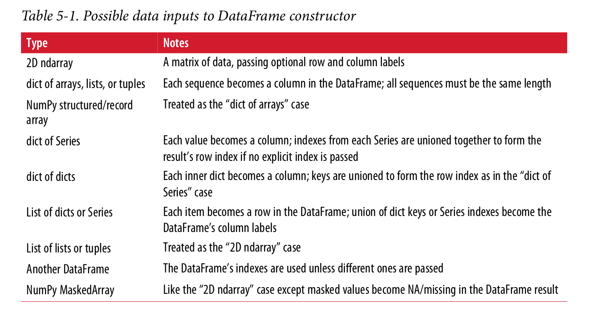

class: center, middle # Introduction to Pandas Basics ### Hongtao Xiao ### 2018.9 --- ## Pandas From github: ``` Flexible and powerful data analysis / manipulation library for Python; Providing labeled data structures similar to R data.frame objects, statistical functions, and much more ``` -- * License: [BSD 3-clause](https://github.com/pandas-dev/pandas/blob/master/LICENSE) --- ## What CANNOT be covered in half an hour? -- <img src="images/cover.jpg" width="600"> --- ## What CAN be covered? * basic data structures * basic operations --- ## **DataFrame** -- * 2-d * rectangle table of data * containing: collection of columns * columns are *ordered* -- *Note*: Most examples in the demo will be using DataFrame. --- ## Inputs to Dataframe  --- ## **Demo time** <img src="images/demo.jpg" width="600"> --- ## Want to know more? * **Series** * *ecosystem* * numpy * matplotlib --- ## Further reading * [Official documentation](http://pandas.pydata.org/pandas-docs/stable/) * [10 Minutes to pandas](http://pandas.pydata.org/pandas-docs/version/0.22.0/10min.html) * [Comparison with SQL](http://pandas.pydata.org/pandas-docs/version/0.22.0/comparison_with_sql.html) --- ## Questions?